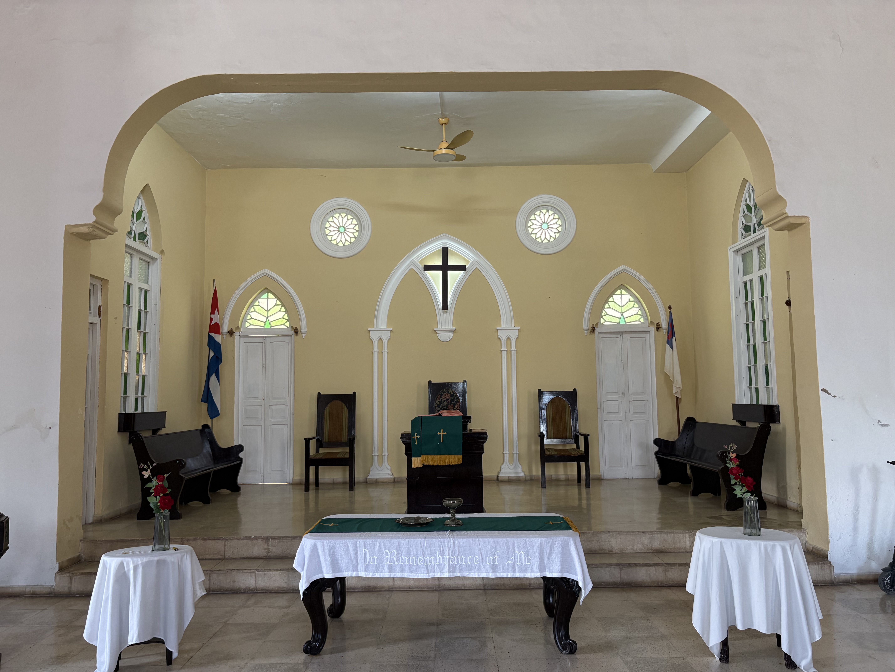

Nuestra iglesia se encuentra con las puertas abiertas todos los días de la semana, lista para recibir a cada persona sin distinción. Ven a compartir la gracia, la comunión y el amor de Dios.
Conoce Nuestras Actividades"Porque de tal manera amó Dios al mundo, que ha dado a su Hijo unigénito, para que todo aquel que en él cree, no se pierda, mas tenga vida eterna."
"El Señor es mi pastor; nada me faltará. En lugares de delicados pastos me hará descansar; junto a aguas de reposo me pastoreará."
"Todo lo puedo en Cristo que me fortalece. Por nada estéis afanosos, sino sean conocidas vuestras peticiones delante de Dios en toda oración."

Nuestra edificación no solo resguarda años de fe y tradición reformada, sino que constituye un centro vivo de servicio social y encuentro espiritual.
Cada detalle del altar invita a la calma y a la oración sincera, recordándonos que somos llamados a ser luz en medio de nuestra sociedad.
Te recordamos que nuestras puertas se mantienen abiertas todos los días para recibir a todas las personas. No importa de dónde vengas, aquí tienes un lugar.